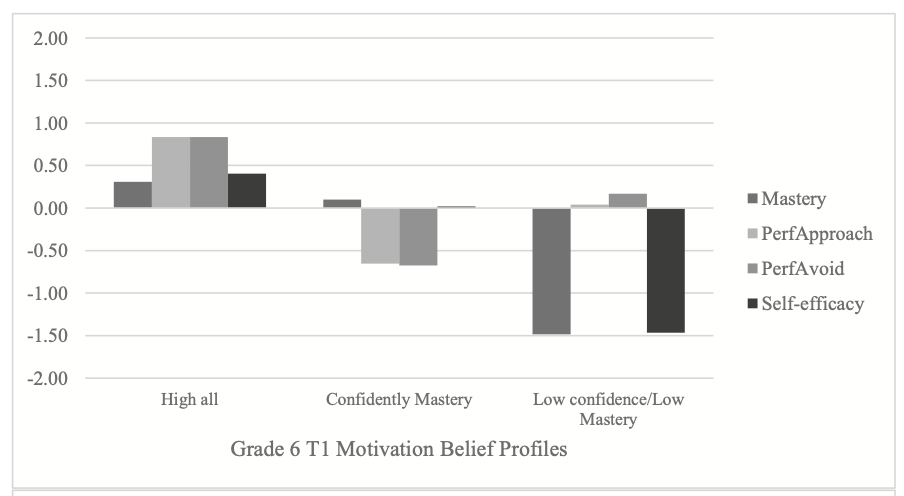

M. L. DeBusk-Lane, Ph.D.
Home
CV
Blog
Research
Categories
All
(7)
Cognitive Load
(1)
Creativity
(1)
Implicit Theories
(1)
Intelligence
(1)
LPA
(3)
Measurement Invariance
(1)
Motivation
(6)
SEM
(1)
Research
Order By
Default
Title
Date - Oldest
Date - Newest
Implicit Theories, Working Memory, and Cognitive Load: Impacts on Creative Thinking
Creativity
Cognitive Load
Implicit Theories
Intelligence
Jan 1, 2019
Profiles of middle school science teachers: Accounting for cognitive and motivational characteristics
Motivation
LPA
Jan 1, 2019
Middle school engagement profiles: Implications for motivation and achievement in science
Motivation
LPA
Jan 1, 2019

Motivation belief profiles in science: Links to classroom goal structures and achievement
Motivation
LPA
Aug 4, 2018
Opportunities to Participate (OtP) in Science: Examining Differences Longitudinally and Across Socioeconomically Diverse Schools.
Motivation
SEM
Measurement Invariance
Jan 1, 2018
Clarifying an Elusive Construct: a Systematic Review of Writing Attitudes
Motivation
Jan 1, 2018
Student Experiences With Writing: Taking the Temperature of the Classroom
Motivation
Jan 1, 2017
No matching items